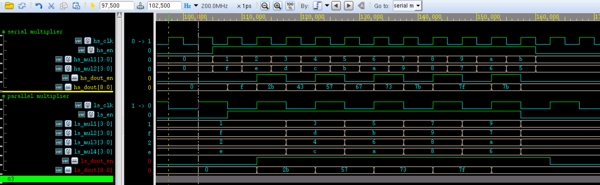
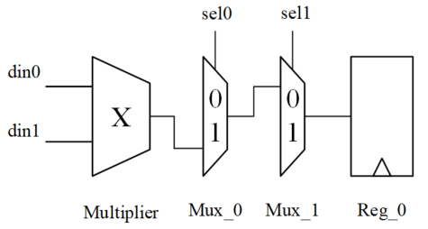

下表显示了在数字设计的各个层次上可减少功耗的百分比。RTL 级之后，功耗的减少量已经非常有限。
| 设计层次 | 改善程度 |
|---|---|
| 系统级 | 50% ~ 90% |
| RTL 级 | 20% ~ 50% |
| 门级 | 10% ~ 15% |
| 晶体管级 | 5% ~ 10% |
| 版图级 | < 5% |
作为一个编写 Verilog 的伪码农，系统级减少功耗的工作也可参与一些，但重点应该放在 RTL 级来减少功耗。
下面就分 2 节来介绍从 RTL 级来减少功耗的常用方法。
并行与流水
对于一个功能模块，可以通过并行的方式实现，也可以通过流水线的方式实现，这两种方法都是用资源换速度。在一定的场合下灵活的使用这两种方法，可以降低功耗。
并行处理
并行处理，可以同时处理多条执行语句，使执行效率变高。所以在满足工作需求的条件下，采用并行处理，可降低系统工作频率，减少功耗。
例如，采用 1 个乘法器和 2 个乘法器（并行）来实现 4 个数据乘加运算的代码描述分别如下：
实例
//1 multiplier, high speed
module mul1_hs
(
input clk , //200MHz
input rstn ,
input en ,
input [3:0] mul1 , //data in
input [3:0] mul2 , //data in
output dout_en ,
output [8:0] dout
);
reg flag ;
reg en_r ;
always @(posedge clk or negedge rstn) begin
if (!rstn) begin
flag <= 1'b0 ;
en_r <= 1'b0 ;
end
else if (en) begin
flag <= ~flag ;
en_r <= 1'b1 ;
end
else begin
flag <= 1'b0 ;
en_r <= 1'b0 ;
end
end
wire [7:0] result = mul1 * mul2 ;
// data output en
reg [7:0] res1_r, res2_r ;
always @(posedge clk or negedge rstn) begin
if (!rstn) begin
res1_r <= 'b0 ;
res2_r <= 'b0 ;
end
else if (en & !flag) begin
res1_r <= result ;
end
else if (en & flag) begin
res2_r <= result ;
end
end
assign dout_en = en_r & !flag ;
assign dout = res1_r + res2_r ;
endmodule
//===========================================
// 2 multiplier2, low speed
module mul2_ls
(
input clk , //100MHz
input rstn ,
input en ,
input [3:0] mul1 , //data in
input [3:0] mul2 , //data in
input [3:0] mul3 , //data in
input [3:0] mul4 , //data in
output dout_en,
output [8:0] dout
);
wire [7:0] result1 = mul1 * mul2 ;
wire [7:0] result2 = mul3 * mul4 ;
//en delay
reg en_r ;
always @(posedge clk or negedge rstn) begin
if (!rstn) begin
en_r <= 1'b0 ;
end
else begin
en_r <= en ;
end
end
// data output en
reg [7:0] res1_r, res2_r ;
always @(posedge clk or negedge rstn) begin
if (!rstn) begin
res1_r <= 'b0 ;
res2_r <= 'b0 ;
end
else if (en) begin
res1_r <= result1 ;
res2_r <= result2 ;
end
end
assign dout = res1_r + res2_r ;
assign dout_en = en_r ;
endmodule
testbench 描述如下。
实例
module test ;
reg rstn ;
//mul1_hs
reg hs_clk;
reg hs_en ;
reg [3:0] hs_mul1 ;
reg [3:0] hs_mul2 ;
wire hs_dout_en ;
wire [8:0] hs_dout ;
//mul1_ls
reg ls_clk = 0;
reg ls_en ;
reg [3:0] ls_mul1 ;
reg [3:0] ls_mul2 ;
reg [3:0] ls_mul3 ;
reg [3:0] ls_mul4 ;
wire ls_dout_en ;
wire [8:0] ls_dout ;
//clock generating
real CYCLE_200MHz = 5 ; //
always begin
hs_clk = 0 ; #(CYCLE_200MHz/2) ;
hs_clk = 1 ; #(CYCLE_200MHz/2) ;
end
always begin
@(posedge hs_clk) ls_clk = ~ls_clk ;
end
//reset generating
initial begin
rstn = 1'b0 ;
#8 rstn = 1'b1 ;
end
//motivation
initial begin
hs_mul1 = 0 ;
hs_mul2 = 16 ;
hs_en = 0 ;
#103 ;
repeat(12) begin
@(negedge hs_clk) ;
hs_en = 1 ;
hs_mul1 = hs_mul1 + 1;
hs_mul2 = hs_mul2 - 1;
end
hs_en = 0 ;
end
initial begin
ls_mul1 = 1 ;
ls_mul2 = 15 ;
ls_mul3 = 2 ;
ls_mul4 = 14 ;
ls_en = 0 ;
#103 ;
@(negedge ls_clk) ls_en = 1;
repeat(5) begin
@(negedge ls_clk) ;
ls_mul1 = ls_mul1 + 2;
ls_mul2 = ls_mul2 - 2;
ls_mul3 = ls_mul3 + 2;
ls_mul4 = ls_mul4 - 2;
end
ls_en = 0 ;
end
//module instantiation
mul1_hs u_mul1_hs
(
.clk (hs_clk),
.rstn (rstn),
.en (hs_en),
.mul1 (hs_mul1),
.mul2 (hs_mul2),
.dout (hs_dout),
.dout_en (hs_dout_en)
);
mul2_ls u_mul2_ls
(
.clk (ls_clk),
.rstn (rstn),
.en (ls_en),
.mul1 (ls_mul1),
.mul2 (ls_mul2),
.mul3 (ls_mul3),
.mul4 (ls_mul4),
.dout (ls_dout),
.dout_en (ls_dout_en)
);
//simulation finish
always begin
#100;
if ($time >= 1000) begin
#1 ;
$finish ;
end
end
endmodule
仿真结果如下。
由图可知，两种实现方法输出结果一致，但并行处理方法的工作频率降低了一半，功耗会有所降低，此时设计面积也会有所增加。

流水线处理
在 《Verilog 教程》中讲述过，一个连续工作的 N 级流水线设计，效率提升倍数约为 N。同并行设计一样，采用流水线设计时，也可以适当降低工作频率来减少功耗。
从另一个角度讲，流水线设计可以将一个较长的组合路径分成 N 级流水线。路径长度缩短为原始路径长度的 1/N。此时如果时钟频率不变，则在一个周期内，只需要对电容 C/N 进行充放电，而不是对原来的电容 C 进行充放电。因此在相同的频率要求下，可以采用较低的电源电压来驱动系统，使功耗降低。
假设在一个设计中，关键路径是一个 32bit X 32bit 的乘法器。该乘法器的整体电容为 C，工作电压为 V。
不加流水线时，要达到此工作频率，工作电压应该为 V。
采用两级流水线方式时，该路径被分成两部分。对于每一部分，整体电容变为 C/2。如果要达到原来的工作频率，工作电压可以降为 βV（β<1）。整个系统功耗降低为原来的 β^2。
流水线具体设计方法，可参考 《Verilog 教程》章节中 《6.7 Verilog 流水线》一节。
资源共享与状态编码
资源共享
当设计中一些相同的运算逻辑在多处使用时，就可以使用资源共享的方法避免多个运算逻辑的重复出现，减少资源的消耗。
例如一个比较逻辑，没有使用资源共享的代码描述如下：
实例
case (mode) :
3'b000: result = 1'b1 ;
3'b001: result = 1'b0 ;
3'b010: result = value1 == value2 ;
3'b011: result = value1 != value2 ;
3'b100: result = value1 > value2 ;
3'b101: result = value1 < value2 ;
3'b110: result = value1 >= value2 ;
3'b111: result = value1 <= value2 ;
endcase
end
对上述代码进行优化，描述如下：
wire equal_con = value1 == value2 ;
wire great_con = value1 > value2 ;
always @(*) begin
case (mode) :
3'b000: result = 1'b1 ;
3'b001: result = 1'b0 ;
3'b010: result = equal_con ;
3'b011: result = equal_con ;
3'b100: result = great_con ;
3'b101: result = !great_con && !equal_con ;
3'b110: result = great_con && equal_con ;
3'b111: result = !great_con ;
endcase
end
第一种方法综合实现时，如果编译器优化做的不好，可能需要 6 个比较器。第二种资源共享的方法只需要 2 个比较器即可完成相同的逻辑功能，因此在一定程度会减少功耗。
状态编码
对于一些变化频繁的信号，翻转率相对较高，功耗相对较大。可以利用状态编码的方式来降低开关活动，减少功耗。
例如高速计数器工作时，使用格雷码代替二进制编码时，每一时刻只有 1bit 的数据翻转，翻转率降低，功耗随之降低。
例如进行状态机设计时，状态机切换前后的状态编码如果只有 1bit 的差异，也会减少翻转率。
操作数隔离
操作数隔离原理：如果在某一段时间内，数据通路的输出是无用的，将输入置成固定值，数据通路部分没有翻转，功耗就会降低。
一个乘法器电路图如下所示。

当 sel0 = 0 或 sel1 = 1 时，乘法器 Multiplier 的输出结果并不能通过两个 Mux 到达寄存器的输入端。即寄存器并不能保存当前乘法器的结果，此次乘法运算是没有必要的。在此种条件下，采用操作数隔离，使乘法器不工作保持静态，也可以节省功耗。
对上述电路进行一个优化，如下图所示。

操作数隔离之后，当 sel0 = 0 或 sel1 = 1 时，乘法器输入端始终为 0，没有信号翻转，乘法器没有进行额外的无效工作，所以功耗会降低。
一般来说，操作数隔离的操作发生在代码综合的时候。这个过程往往是人为可设置、编译器可自动识别的。当然，良好的代码风格，在编写 RTL 电路时就考虑周全，更加有助于实现操作数隔离，从而降低功耗。
乘法器没有使用操作数隔离时，Verilog 代码描述如下：
实例
module oper_isolation1
(
input clk , //100MHz
input [1:0] sel ,
input [3:0] din1 , //data in
input [3:0] din2 , //data in
output reg [7:0] dout
);
reg [7:0] res ;
always @(*) begin
res = din1 * din2 ;
end
always @(posedge clk) begin
if (sel == 2'b01) begin
dout <= res ;
end
end
endmodule
乘法器使用操作数隔离时，Verilog 代码描述如下：
实例
module oper_isolation2
(
input clk , //100MHz
input [1:0] sel ,
input [3:0] din1 , //data in
input [3:0] din2 , //data in
output reg [7:0] dout
);
wire [3:0] mul1 = sel == 2'b01 ? din1 : 0 ;
wire [3:0] mul2 = sel == 2'b01 ? din2 : 0 ;
reg [7:0] res ;
always @(*) begin
res = mul1 * mul2 ;
end
always @(posedge clk) begin
if (sel == 2'b01) begin
dout <= res ;
end
end
endmodule

点我分享笔记